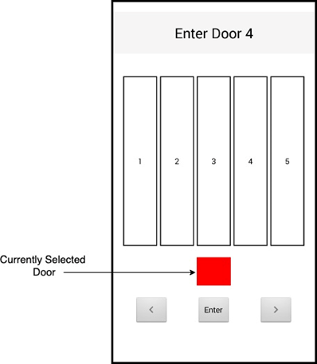

Android Controls Comparator
This was the final project for my Mobile User Interfaces course at York University. It was done as a group alongside a few of my peers. Tha application was developed in Android Studio using Java. The application itself was designed to collect data from user input between two forms of mobile interaction systems. A tap-based system and a swipe-based system were used. The purpose of the application was to compare effeciency between these two types of input styles and the data collected was utilized in our final report. The data itself recorded time taken to complete the provided tasks, the amount of errors made during each task, as well as the amount of times users had to correct themselves after making mistakes.